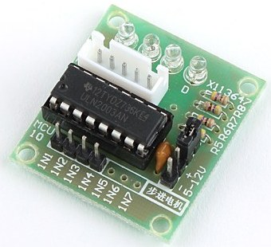
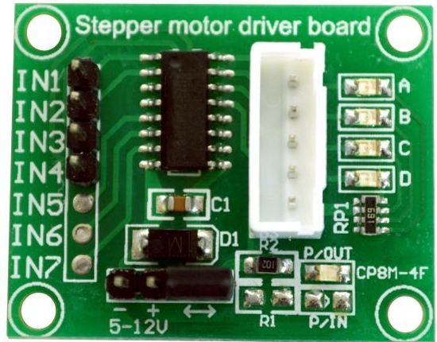
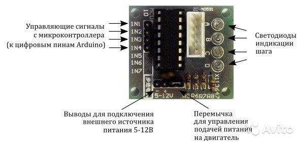
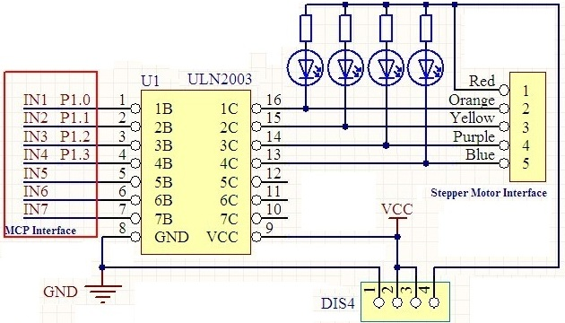
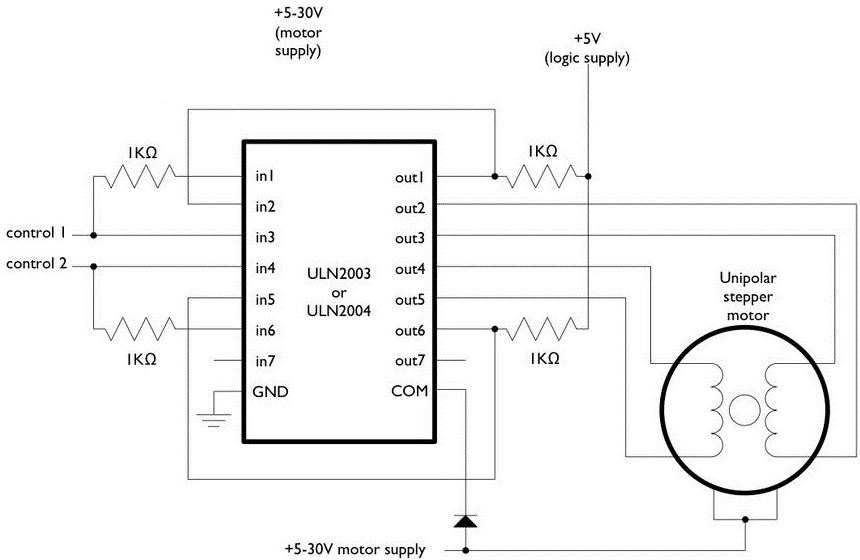
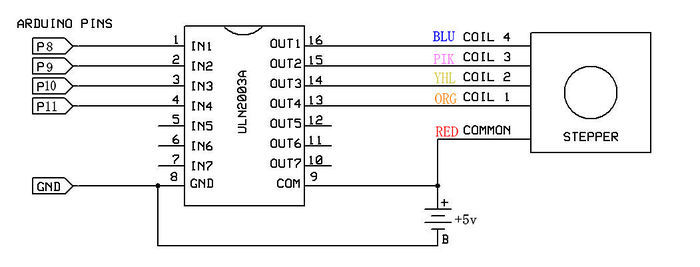

Драйвер шагового двигателя ULN2003
Модуль управления для шагового двигателя 28YBJ-48 разработан на микросхеме ULN2003 - транзисторная сборка с выходными ключами повышенной мощности, имеющая на выходах защитные диоды, которые предназначены для защиты управляющих электрических цепей от обратного выброса напряжения от индуктивной нагрузки.



Рис. 1 - Внешний вид драйвера шагового двигателя ULN2003
Плата драйвера шагового двигателя на базе микросхемы ULN2003 представляет собой массив транзисторов, включенных по схеме Дарлингтона. Это позволяет достаточно просто управлять мотором 28BYJ-48, используя микроконтроллер.
На плате драйвера имеется пятиконтактный разъем для подключения к шаговику и четыре светодиода, показывающих, какая из обмоток запитана в текущий момент времени.
Также сбоку расположен джампер (два вывода под четырьмя резисторами), установка которого позволяет подавать питание на шаговый двигатель. Питать мотор от 5 В Arduino не рекомендуется, так как мотор может потреблять ток, превышающий возможности Arduino. Лучше использовать внешний 5-12 В источник питания, выдающий ток не менее 1 А. Четыре управляющих входа помечены как IN1-IN4 и должны быть подключены к четырем цифровым выводам Arduino.
Характеристики
- Напряжение питания двигателя: 5...12 В (постоянный ток).
- Выведено 4 фазы.
- Количество шагов: 64;
- Напряжение управляющее: 5 В.
- Номинальный ток коллектора одного ключа 0,5 А.
- Угол поврота на один шаг: 5,625 градуса.
- Частота: 100 Гц.
- Частота холостого хода по часовой стрелке: > 600 Гц.
- Частота холостого хода против часовой стрелки: > 1000 Гц.
- Класс электробезопасности: A.
- Светодиодная индикация включения фаз.
- Защитные диоды на выходах.
- Вход адаптирован к всевозможными видам логики.
- Возможность применения для управления реле.
- Размеры: 35×30×10мм.
- Масса: 8 г.

Рис. 2 - Схема модуля драйвера шагового двигателя на базе ULN2003
Подключение драйвера шагового двигателя ULN2003

Рис. 3 - Схема подключения ULN2003 к шаговому двигателю
Подключение драйвера шагового двигателя ULN2003 к Arduino Uno
Подключите выводы IN1, IN2, IN3 и IN4 к пинам Arduino Uno. Положительный контакт источника питания необходимо подключить к выводу, помеченному как «+», а землю источника питания к выводу «-» на плате контроллера. Если для питания Arduino и мотора используются различные источники питания, то необходимо объединить выводы «земля» источников вместе.

Рис. 4 - Схема подключения ULN2003 к Arduino и шаговому двигателю
Примечание. Если вы захотите использовать плату L293 вместо ULN2003, красный контакт подключать не надо.
Источники
autohome.org.ua - Драйвер шагового двигателя ULN2003
arduino-diy.com - Arduino, шаговый двигатель 28-BYJ48 и драйвер ULN2003
robot-kit.ru - Подключение шагового двигателя 28BYJ-48-5V к Arduino. Часть 1.
robot-kit.ru - Подключение шагового двигателя 28BYJ-48-5V к Arduino. Часть 2.
robot-kit.ru - Подключение шагового двигателя 28BYJ-48-5V к Arduino. Часть 3.
robotosha.ru - Шаговый двигатель 28BYJ-48 с драйвером ULN2003 и Arduino UNO